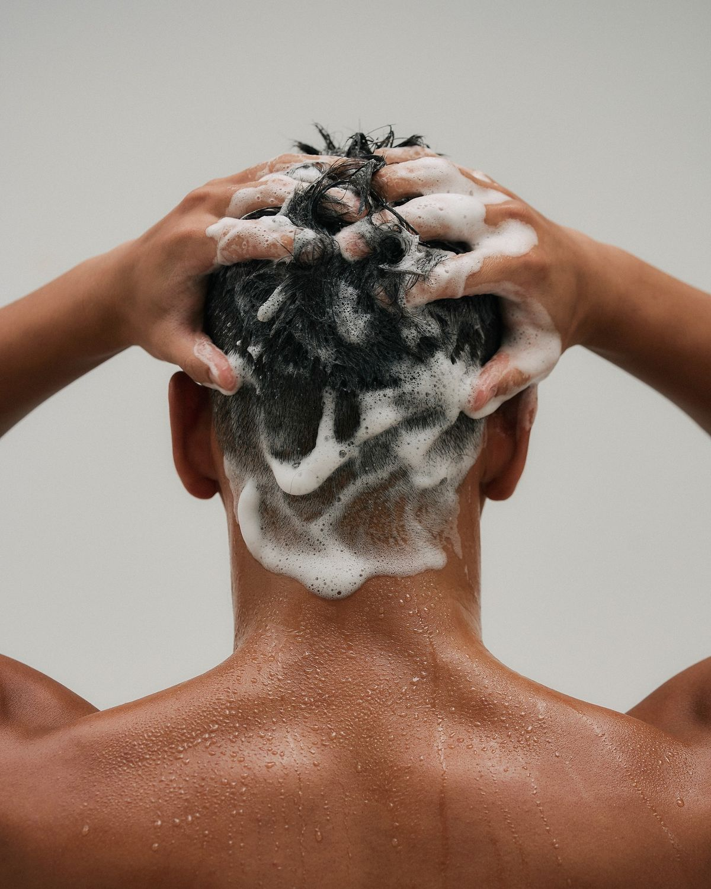
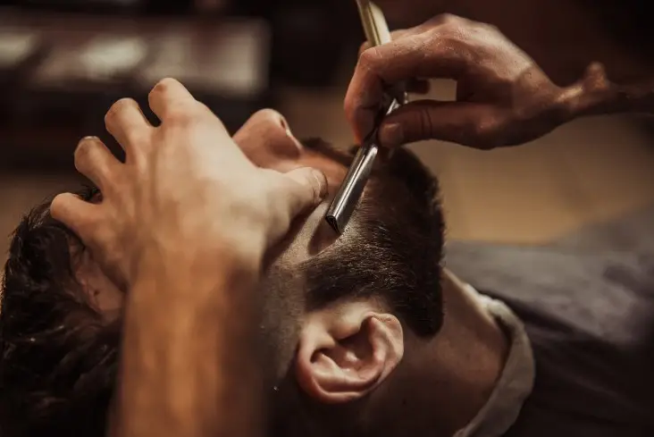

Mi az a férfi grooming – és miért számít?
A "grooming" szó az angol nyelvből érkezett, és alapvetően a tudatos férfi önápolást jelenti – a hajvágástól és szakállápolástól kezdve a bőrápoláson és a tiszta körmökön át az összehangolt megjelenésig. Nem a hiúságról szól, hanem arról, hogy tiszteletben tartod magad és a körülötted lévőket.
Egy jól ápolt férfi nem feltűnő – hanem rendezett. Nem látszik meg rajta, hogy sokat foglalkozik magával, de azt azonnal érzékeled, hogy valami más van benne. Ez az a fajta megjelenés, amit nem lehet egy este megcsinálni, de néhány következetes szokással bárki elérheti.

Haj – az összhatás alapja
A haj az első dolog, amit az emberek észrevesznek. Egy jól megválasztott frizura azonnal emeli az összképet – egy elhanyagolt haj viszont még a legjobb ruhát is lerontja. A férfi grooming szempontjából a haj az egyik legfontosabb terület, ahol a rendszeresség és a megfelelő fodrász sokat számít.
Rendszeres hajvágás
Fade-nél 2–3 hetente, klasszikus stílusnál 4–5 hetente. A frissesség nem a divatos frizurán múlik, hanem a karbantartáson.
Megfelelő sampon
A hajtípushoz illő sampon megakadályozza a zsírosodást és a szárazságot. A "2 az 1-ben" termékek ritkán optimálisak.
Kevés, de jó formázó
Mogyorónyi wax vagy pomádé általában elég. A túl sok termék nehézzé, természetellenessé teszi a hajat.
Szárítás figyelemmel
A hajszárítóval adott irány meghatározza a végső formát. Szárítsd a haj növekedési irányával, majd ellene – ez adja a volument.

Szakáll – karakter és rendezettség
A szakáll az arc karakterének része – de csak akkor, ha ápolt. Egy rendezetlen, kontúrok nélküli szakáll nem karizmát ad, hanem pongyolaságot sugároz. A megfelelő grooming rutin ezt a különbséget hidalja át.
A leggyakoribb hiba: sokan hagyják nőni a szakállt, de nem foglalkoznak a formájával. A nyakvonal, a pofaszakáll kontúrja és a haj-szakáll arány az, ami egy igényes, összeszedett férfi benyomását kelti – nem a hosszúság önmagában.
- Rendszeres igazítás – legalább hetente egyszer a kilógó szálak levágása
- Szakállolaj minden mosás után – puhaságért és egészséges megjelenésért
- Precíz nyakvonal – ez az egyetlen részlet, amit mindenki észrevesz
- Haj és szakáll összehangolása – profi barber shopban a kettő egyszerre kerül kialakításra
Bőrápolás – az alap, amit sokan kihagynak
A férfi bőrápolás a legtöbb grooming útmutatóban kimarad – pedig az egészséges, ápolt bőr az egész megjelenés alapja. Nem kell bonyolult rutinban gondolkodni: néhány alapvető lépés elegendő.
A borotválkozás, a nap és a környezeti hatások mind megviselik a bőrt. Ha erre nem figyelünk, az arcbőr kiszárad, feszül, vagy éppen ellenkezőleg – túltermel faggyút. Mindkét esetben az eredmény ugyanaz: a megjelenés szenved.
- Arcmosás reggel és este – eltávolítja a szennyeződést és a felesleges faggyút
- Hidratáló krém borotválkozás után és reggel – megelőzi a kiszáradást
- SPF napvédő nyáron – a nap az egyik legnagyobb öregedési faktor
- Ajakhigiénia – kiszáradt, repedezett ajak azonnal leront egy egyébként igényes összképet
Az apró részletek, amelyek sokat számítanak
Az igényes férfi megjelenés nem csupán a hajból és a szakállból áll. Van néhány terület, amelyet sokan figyelmen kívül hagynak – pedig ezek éppen azok a részletek, amelyeket mások észrevesznek.
Körmök
Rövid, tiszta körmök. Nem kell manikűr – csak rendszeres vágás és tisztán tartás. A piszkos vagy hosszú köröm azonnal lerontja az összképet.
Szemöldök
Nem kell vékonyra igazítani – de az összenövő szemöldök vagy a rendkívül hosszú szálak feltűnnek. Egy egyszerű kis igazítás sokat segít.
Fülek és orr
A fülből és orrból kilógó szőrzet az egyik leggyakrabban figyelmen kívül hagyott grooming terület – pedig mindenki látja.
Illat
Egy visszafogott, minőségi parfüm vagy dezodor a személyiség része. Kevesebb több – a túlzásba vitt illat épp olyan zavaró, mint a semmi.
Hogyan építs fel egy fenntartható grooming rutint?
A legtöbb férfi azért hagyja el a grooming szokásait, mert túl bonyolulttá teszi őket. Az igazság az, hogy egy jó rutin nem igényel sok időt – csak következetességet.
- Reggel (5 perc): arcmosás, hidratáló, fogmosás, haj formázása
- Este (3 perc): arcmosás, hidratáló – ennyi elég
- Hetente: szakáll igazítása, köröm vágása
- Havonta: hajvágás a fodrászatnál, szakálligazítás barber shopban
A rendszeresség teszi a különbséget. Egy havi barber shop látogatás és egy napi 5 perces rutin összeadva olyan megjelenést eredményez, amit sokan évekig próbálnak elérni, de sosem érik el, mert nincs mögötte következetes rendszer.
Tedd rendbe a megjelenésedet – foglalj időpontot
A Bosphorus barber shopban haj, szakáll és teljes férfi grooming egy helyen elérhető. Tapasztalt borbélyok, személyre szabott tanácsadás és profi eszközök – foglalj most, és tedd tudatossá a megjelenésedet.